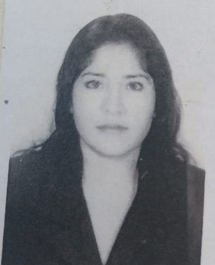

|
Nombres y Apellidos: Sheylah Karina Torres Saavedra Estado Civil: soltera Nacionalidad: peruana DNI:16803007 Edad: 37 años Lugar de Nacimiento: Chiclayo |
 |
Resumen Funcional
He realizado el servicio rural urbano marginal de salud en el departamento de Lambayeque, donde en otras actividades del ámbito profesional desarrollé actividades relacionadas a banco de sangre; en la atención del donante de sangre, tamizaje , procedimientos de aféresis. Actualmente, me desempeño como responsable del laboratorio de un establecimiento de salud, así como también apoyando en laboratorio de la red de salud de Lima Este Metropolitana
Mis objetivos son crecer profesionalmente, evolucionandocon los requisitos del ámbito laboral cada día más competitivo, afianzado y aplicando mis conocimientos y experiencia profesional y así poder adaptarme a diversos ambientes y exigencias de trabajo
Experiencia Profesional
• Institución: Centro médico Dr. Luis Quito
Periodo: 26 de marzo de 2003 al 26 de abril del 2004
Dirección: Jr. Abanto 100. Av.Grau 740 La Victoria- Lima 13
Teléfono: 431-4676
• Institución: Centro médico obstétrico "Mayo"
Periodo: 14 de febrero 2006 al 8 de septiembre 2008
Dirección: Av. Los Jilgueros 102. Urb. Santa Anita.-Lima.
Teléfono: 362-3155
• Institución: ESSALUD PROGRAMA DE ATENCIÓN DOMICILIARIA(PADOMI)
Periodo: 13 de agosto-13 de septiembre 2007.
• Institución: Centro Salud "Micaela Bastidas" DISA IV L.E
Periodo: 04 de marzo 2008-mayo 2013
AAHH. Micaela Bastidas Ate. Vitarte
Teléfono: 3511522
• Institución: Centro Salud "FORTALEZA"- REDSLEM.
Periodo: mayo 2013- actualidad
Dirección: s/n Los Virreyes - Ate Vitarte
Teléfono: 3515376